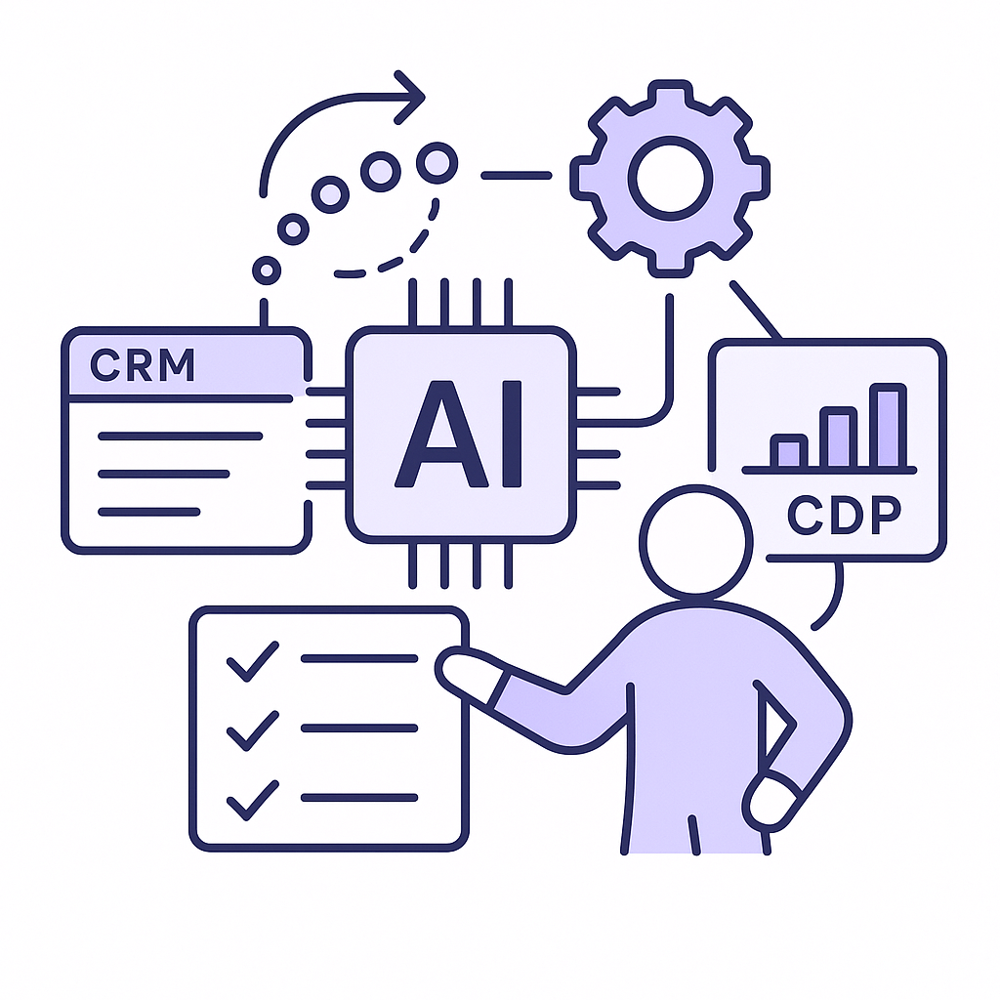
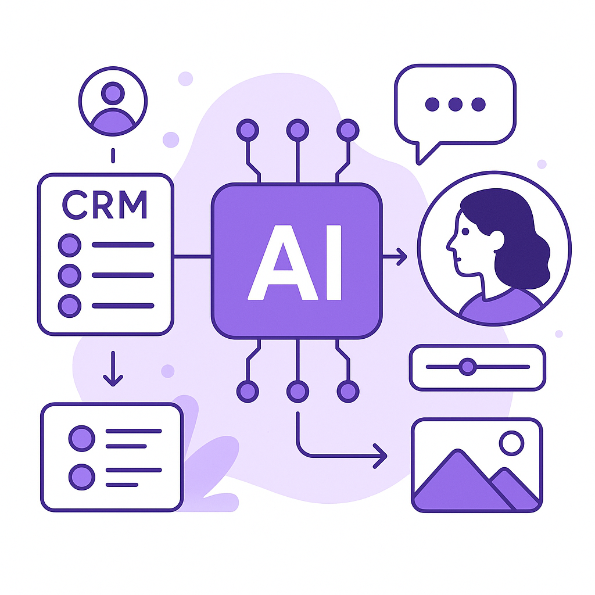
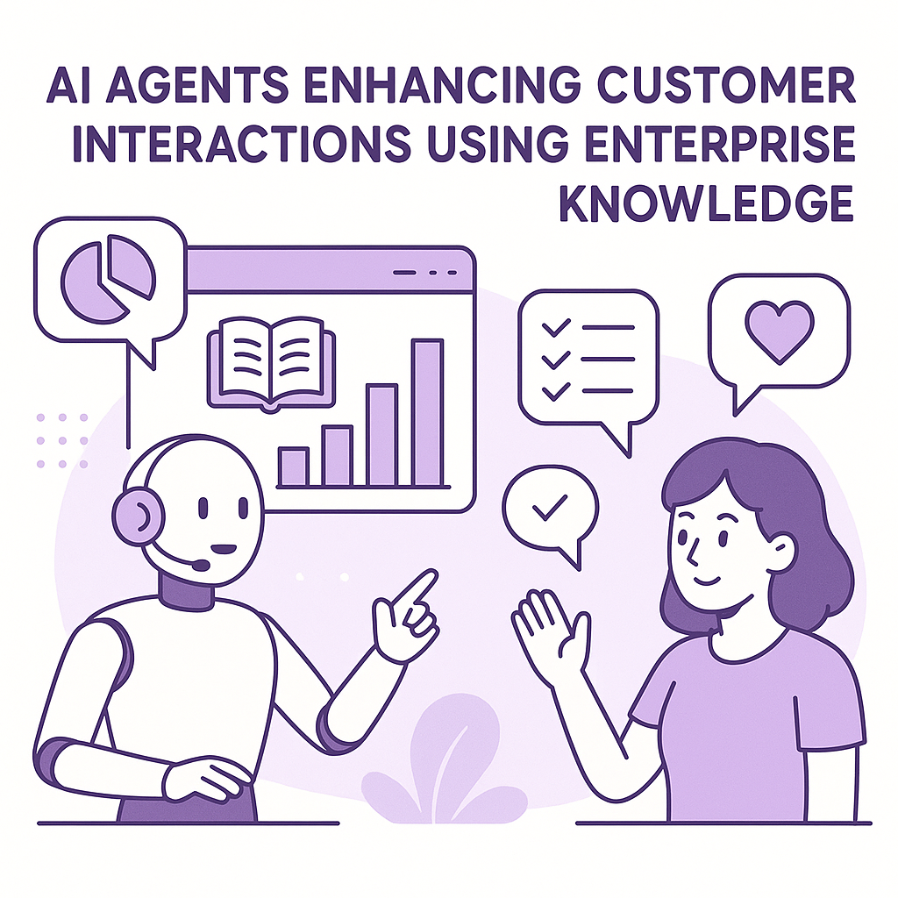
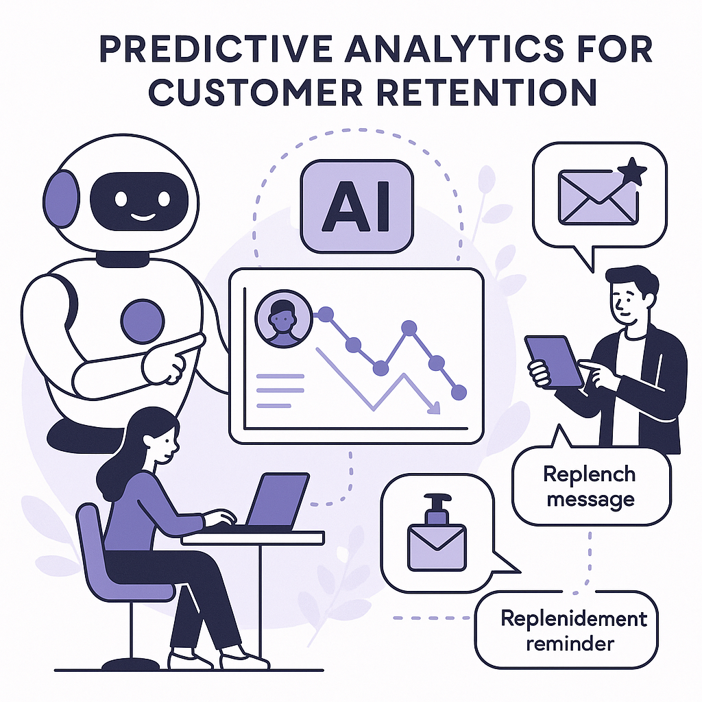
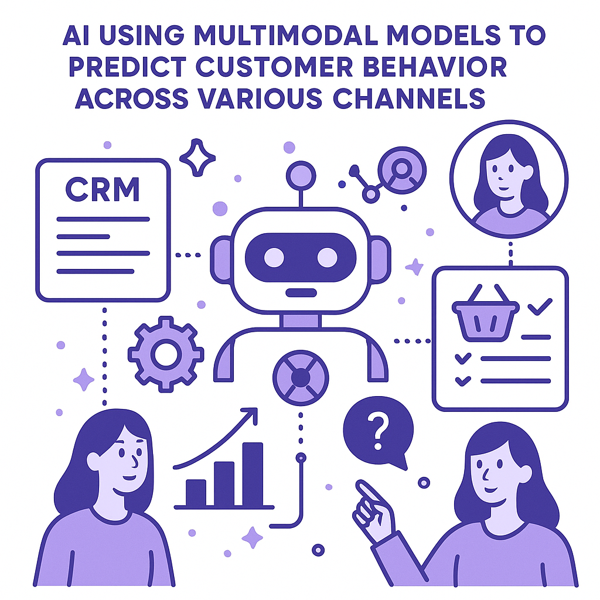

Publishing Recommendation
reviseSeveral posts contain unsupported claims and overuse of 'game-changer' rhetoric that need to be toned down to align with our brand voice. A few posts also lack concrete evidence or mechanisms explaining how technologies impact retention marketing, which should be clarified.
Today's drafts broadly cover significant AI trends but often lapse into hyperbolic language and insufficient specificity, particularly on how technologies practically benefit retention marketing. Posts should be revised to focus on clear, evidence-backed insights rather than broad claims. Ensure mechanisms are explained and avoid hype to maintain credibility and adherence to our brand voice.
LinkedIn Posts (10)
1. Microsoft AI’s MAI-Transcribe-2 undercuts competitors ★ Purands solution · high priority
CTA: How would faster speech recognition change your approach to customer service?

Image prompt · isometric-flat
Caption: MAI-Transcribe-2: Speed and Precision in AI.
Alternative hooks
- Microsoft's MAI-Transcribe-2 is shaking up the speech recognition space.
- Faster, cheaper speech recognition - what's the impact?
- Real-time customer service just got a boost with MAI-Transcribe-2.
Research behind this post (sources, summaries & confidence)
Microsoft AI’s MAI-Transcribe-2 undercuts competitors conf 0.85 · AI industry
Microsoft's competitive pricing and speed in speech recognition can make real-time communication more efficient, enhancing customer service in retention marketing.
Sources & what I took from each
- Microsoft AI's MAI-Transcribe-2 undercuts competitors: VentureBeat article confirms the competitive advantage in pricing and performance of MAI-Transcribe-2. ↗ read source
Original trend links
Risks / caveats
- Potential for market pressure to lower margins
- Technical limitations in specific languages or dialects
2. Google brings agentic AI to Gemini, starting with businesses ★ Purands solution · high priority
CTA: How are you planning to leverage AI in your retention strategies?

⬇ Download image
Image prompt · isometric-flat
Caption: Agentic AI: Transforming Business Processes.
Alternative hooks
- Google's agentic AI in Gemini is changing the game for businesses.
- AI that plans and executes tasks? Meet Google's agentic AI in Gemini.
- Retention marketing just got smarter with Google's agentic AI.
Research behind this post (sources, summaries & confidence)
Google brings agentic AI to Gemini, starting with businesses conf 0.80 · AI industry
Google's move to integrate agentic AI into Gemini for business applications is a significant development in AI deployment for enterprise use. This aligns with the trend of using AI to automate and optimize business processes, which is critical for retention marketing strategies.
Sources & what I took from each
- Google launches agentic AI in Gemini: The TechCrunch article confirms Google's announcement and outlines the features of the agentic AI capabilities. ↗ read source
Original trend links
Risks / caveats
- Potential security risks if not properly managed
- Complexity in integration with existing business systems
3. Google DeepMind Releases EmbeddingGemma 2 ★ Purands solution · high priority
CTA: How do you see multimodal embeddings changing customer engagement strategies?

⬇ Download image
Image prompt · isometric-flat
Caption: EmbeddingGemma 2: Elevating Personalization.
Alternative hooks
- EmbeddingGemma 2 is here, and it's a game-changer for retention marketing.
- Imagine integrating customer data with CRM and WhatsApp messaging, powered by advanced multimodal embeddings.
- By mapping diverse data into a single space, we can deliver tailored experiences that resonate with customers.
Research behind this post (sources, summaries & confidence)
Google DeepMind Releases EmbeddingGemma 2 conf 0.80 · AI startups
EmbeddingGemma 2's release enhances multimodal embedding capabilities, crucial for developing AI models that improve personalization and customer engagement in retention marketing.
Sources & what I took from each
- Google DeepMind releases EmbeddingGemma 2: MarkTechPost covers the technical specifications and potential applications of EmbeddingGemma 2. ↗ read source
Original trend links
Risks / caveats
- Challenges in implementing multimodal models
- Potential for misuse in non-intended applications
4. AI's Role in Retail Transformation at Walmart ★ Purands solution · high priority
CTA: How do you see AI transforming customer retention in your industry?
Alternative hooks
- Walmart's 'Sparky' isn't just an AI-it's a gamechanger for customer experience.
- What's behind Walmart's latest customer experience overhaul?
- AI isn't just a buzzword at Walmart; it's Sparky, reshaping retail.
Research behind this post (sources, summaries & confidence)
AI is ‘reshaping’ Walmart with Sparky leading the charge conf 0.80 · AI industry
AI's role in reshaping large retail operations like Walmart's highlights its potential in optimizing customer experience and retention strategies.
Sources & what I took from each
- AI reshaping Walmart with Sparky: Retail Dive article discusses Walmart's investment in AI and the role of Sparky in enhancing customer experience. ↗ read source
Original trend links
Risks / caveats
- Implementation challenges in large organizations
- Potential for job displacement
5. Connecting AI agents to enterprise knowledge ★ Purands solution · high priority
CTA: How is your organization bridging the gap between data and actionable insights?

⬇ Download image
Image prompt · isometric-flat
Caption: AI Agents: Transforming Enterprise Knowledge.
Alternative hooks
- When AI meets enterprise knowledge, magic happens.
- Ever wondered how to turn CRM data into action?
- The secret to customer retention? Enterprise knowledge integration.
Research behind this post (sources, summaries & confidence)
Connecting AI agents to enterprise knowledge conf 0.75 · Customer Data Platforms
The integration of AI agents with enterprise knowledge bases is crucial for enhancing CRM and CDP systems, thus improving customer engagement and retention.
Sources & what I took from each
- AI agents are connecting to enterprise knowledge: The article from Technology Review discusses the advancements and integration challenges of AI agents with enterprise systems. ↗ read source
Original trend links
Risks / caveats
- Data privacy concerns
- Technical challenges in integration
6. Bringing predictive analytics to the agentic AI era ★ Purands solution · high priority
CTA: How is your team integrating predictive analytics into your retention strategies?

⬇ Download image
Image prompt · isometric-flat
Caption: Predictive Analytics: Sharpening Retention Strategies.
Alternative hooks
- Predictive analytics is no longer just a buzzword - it's transforming retention marketing in APAC.
- Traditional forecasts can't keep up with the precision of agentic AI models.
- How can APAC businesses harness predictive analytics for better customer retention?
Research behind this post (sources, summaries & confidence)
Bringing predictive analytics to the agentic AI era conf 0.70 · AI industry
The advancement of predictive analytics through agentic AI can significantly enhance retention marketing by enabling more precise customer behavior predictions.
Sources & what I took from each
- Predictive analytics enhanced by agentic AI: Technology Review article highlights the capabilities of new predictive models in the context of agentic AI. ↗ read source
Original trend links
Risks / caveats
- Over-reliance on AI predictions without human oversight
- Data quality issues affecting predictions
7. Liquid AI Releases Open-Weight d1-3B and d1-omni-600M ★ Purands solution · high priority
CTA: How have you seen multimodal AI models impact customer interactions in your business?

⬇ Download image
Image prompt · isometric-flat
Caption: Multimodal Models: Enhancing Customer Insights.
Alternative hooks
- In AI, staying ahead means leveraging new models.
- Liquid AI's latest models could redefine retention marketing.
- Multimodal models are reshaping customer interaction strategies.
Research behind this post (sources, summaries & confidence)
Liquid AI Releases Open-Weight d1-3B and d1-omni-600M conf 0.70 · AI startups
The release of these models by Liquid AI offers new possibilities for multimodal decision-making, which can enhance customer interaction strategies in retention marketing.
Sources & what I took from each
- Liquid AI releases new multimodal models: MarkTechPost details the features and potential applications of Liquid AI's new models. ↗ read source
Original trend links
Risks / caveats
- Potential issues with model accuracy
- Integration challenges with existing systems
8. Architect Launches Liquid Inference ★ Purands solution · high priority
CTA: How do you think real-time AI auctions will impact retention strategies?
Alternative hooks
- Imagine a world where every AI request competes for the best price.
- Real-time auctions for AI services are here.
- How Liquid Inference could reshape retention marketing.
Research behind this post (sources, summaries & confidence)
Architect Launches Liquid Inference conf 0.70 · AI startups
Liquid Inference's real-time auction for LLM inference could drastically impact AI service costs and efficiency, crucial for retention marketing strategies.
Sources & what I took from each
- Architect launches Liquid Inference: MarkTechPost article explains the concept and potential benefits of Liquid Inference. ↗ read source
Original trend links
Risks / caveats
- Market fluctuations could affect cost predictability
- Technical hurdles in real-time auction implementation
9. Popular AI leaderboard Arena nearly doubles valuation to $3.1B
CTA: How do you see AI benchmarking impacting your work?
Alternative hooks
- Arena's valuation nearly doubles to $3.1 billion.
- AI benchmarking is gaining serious traction.
- Why Arena's growth matters to all of us.
Research behind this post (sources, summaries & confidence)
Popular AI leaderboard Arena nearly doubles valuation to $3.1B conf 0.90 · AI startups
Arena's valuation surge indicates strong market interest in AI model benchmarking, which can drive improved AI performance for retention marketing applications.
Sources & what I took from each
- Arena nearly doubles valuation to $3.1B: TechCrunch reports on Arena's latest funding round and its impact on valuation. ↗ read source
Original trend links
Risks / caveats
- Market volatility may affect future valuations
- Reliance on model benchmarking demand
10. OpenAI's revenue reportedly $20 billion less than projected
CTA: What do you think are the biggest hurdles in monetizing AI at scale?
Alternative hooks
- Remember when OpenAI was expected to bring in $20 billion more revenue?
- Ever wondered why some AI giants fall short of their revenue projections?
- OpenAI's $20 billion revenue shortfall isn't just a financial blip.
Research behind this post (sources, summaries & confidence)
OpenAI's revenue reportedly $20 billion less than projected conf 0.90 · AI industry
The discrepancy in OpenAI's revenue highlights the challenges in monetizing AI at scale, relevant for understanding market dynamics impacting retention marketing.
Sources & what I took from each
- OpenAI's revenue $20 billion less than projected: TechCrunch article details the financial shortfall and its implications for OpenAI. ↗ read source
Original trend links
Risks / caveats
- Could impact investor confidence
- Might affect future AI development investments
Today's Trends
| # | Trend | Category | Why it matters |
|---|---|---|---|
| 1 | Google brings agentic AI to Gemini, starting with businesses
source |
AI industry | Google's move to integrate agentic AI into Gemini for business applications is a significant development in AI deployment for enterprise use. This aligns with the trend of using AI to automate and optimize business processes, which is critical for retention marketing strategies. |
| 2 | Anthropic launches free AI security scans for open-source projects
source |
AI startups | Anthropic's initiative to provide free AI security scans for open-source projects could enhance trust and security in AI systems, which is essential for customer retention and the safe deployment of AI in marketing. |
| 3 | Popular AI leaderboard Arena nearly doubles valuation to $3.1B
source |
AI startups | Arena's valuation surge indicates strong market interest in AI model benchmarking, which can drive improved AI performance for retention marketing applications. |
| 4 | Connecting AI agents to enterprise knowledge
source |
Customer Data Platforms | The integration of AI agents with enterprise knowledge bases is crucial for enhancing CRM and CDP systems, thus improving customer engagement and retention. |
| 5 | Bringing predictive analytics to the agentic AI era
source |
AI industry | The advancement of predictive analytics through agentic AI can significantly enhance retention marketing by enabling more precise customer behavior predictions. |
| 6 | Google DeepMind Releases EmbeddingGemma 2
source |
AI startups | EmbeddingGemma 2's release enhances multimodal embedding capabilities, crucial for developing AI models that improve personalization and customer engagement in retention marketing. |
| 7 | Liquid AI Releases Open-Weight d1-3B and d1-omni-600M
source |
AI startups | The release of these models by Liquid AI offers new possibilities for multimodal decision-making, which can enhance customer interaction strategies in retention marketing. |
| 8 | JetBrains Releases Mellum2.1
source |
AI industry | Mellum2.1's release improves coding agent capabilities, which could enhance AI-driven development and deployment of marketing solutions, impacting retention strategies. |
| 9 | Microsoft AI’s MAI-Transcribe-2 undercuts competitors
source |
AI industry | Microsoft's competitive pricing and speed in speech recognition can make real-time communication more efficient, enhancing customer service in retention marketing. |
| 10 | Meta AI Open-Sources Rebalancer
source |
AI startups | Rebalancer's open-sourcing can lead to more effective resource allocation in AI systems, crucial for optimizing retention marketing operations. |
| 11 | AI is ‘reshaping’ Walmart with Sparky leading the charge
source |
AI industry | AI's role in reshaping large retail operations like Walmart's highlights its potential in optimizing customer experience and retention strategies. |
| 12 | OpenAI's revenue reportedly $20 billion less than projected
source |
AI industry | The discrepancy in OpenAI's revenue highlights the challenges in monetizing AI at scale, relevant for understanding market dynamics impacting retention marketing. |
| 13 | Architect Launches Liquid Inference
source |
AI startups | Liquid Inference's real-time auction for LLM inference could drastically impact AI service costs and efficiency, crucial for retention marketing strategies. |
| 14 | Anthropic changes usage policy to ban model abuse
source |
AI industry | Anthropic's policy changes reflect growing concerns about ethical AI use, important for maintaining trust in AI systems used for customer engagement and retention. |
Risk Assessment
- Overuse of hype language like 'game-changer'
- Lack of specific evidence or examples in some posts
- Potentially AI-generated tone with repetitive structures
Suggested LinkedIn Comments (30)
Open each post, then paste the copied comment. Nothing is posted automatically.
1. opinion · rss:techcrunch.com — Together, the awardees have donated nearly $6 billion to efforts tied to Trump a
Post by: rss:techcrunch.com
Why it works: It addresses the broader implications of the post, focusing on transparency and policy influence, which are critical in political donations.
↗ Open LinkedIn post to paste comment2. insight · rss:techcrunch.com — With over a thousand emails, slides, texts, and documents from the United States
Post by: rss:techcrunch.com
Why it works: It ties the simulation to broader lessons in transparency and ethics, drawing out the enduring relevance of the Theranos case.
↗ Open LinkedIn post to paste comment3. insight · rss:techcrunch.com — Three fired OpenAI safety researchers dispute allegations of mishandling sensiti
Post by: rss:techcrunch.com
Why it works: It expands on the post by discussing the importance of balancing innovation with ethical oversight, a key issue in AI development.
↗ Open LinkedIn post to paste comment4. opinion · rss:techcrunch.com — A fictionalized Sam Bankman-Fried is coming to your TV screen on November 19.
Post by: rss:techcrunch.com
Why it works: It emphasizes the need to differentiate between entertainment and real analysis, encouraging critical consumption of media.
↗ Open LinkedIn post to paste comment5. opinion · rss:techcrunch.com — Ben Affleck is going viral for his deep knowledge of AI, from neural networks an
Post by: rss:techcrunch.com
Why it works: This comment appreciates diverse expertise, highlighting the value of cross-industry knowledge in tech discussions.
↗ Open LinkedIn post to paste comment6. insight · rss:techcrunch.com — The company behind the popular LMArena leaderboard has raised $200 million led b
Post by: rss:techcrunch.com
Why it works: It underscores the importance of ethical oversight as AI becomes more capable, resonating with the post's focus on alignment issues.
↗ Open LinkedIn post to paste comment7. insight · rss:techcrunch.com — It had previously been reported that the AI lab's annualized revenue was some $7
Post by: rss:techcrunch.com
Why it works: It connects revenue estimation issues to the broader theme of data reliability in tech, emphasizing the need for accuracy.
↗ Open LinkedIn post to paste comment8. insight · rss:techcrunch.com — Google is turning Gemini into an AI agent that can plan, execute tasks, and work
Post by: rss:techcrunch.com
Why it works: It addresses the potential impact of AI agents on work dynamics, aligning with the post's focus on AI capabilities.
↗ Open LinkedIn post to paste comment9. insight · rss:techcrunch.com — Anthropic's updated usage policy explicitly prohibits users from repeatedly abus
Post by: rss:techcrunch.com
Why it works: This connects the post to broader themes of AI ethics and the importance of clear guidelines, reinforcing the significance of Anthropic's policy updates.
↗ Open LinkedIn post to paste comment10. respectful challenge · rss:techcrunch.com — OpenAI's flood of proofs deviated from the guidelines set by a group of mathemat
Post by: rss:techcrunch.com
Why it works: It respectfully questions the significance of adhering to research standards, emphasizing the importance of methodological consensus.
↗ Open LinkedIn post to paste comment11. opinion · rss:www.theverge.com — The United States' execution of the Fort Hood shooter will be livestreamed, anon
Post by: rss:www.theverge.com
Why it works: It clearly states a stance on a controversial issue, encouraging reflection on the implications of such actions.
↗ Open LinkedIn post to paste comment12. insight · rss:www.theverge.com — Anthropic's offering to help open-source projects track down security vulnerabil
Post by: rss:www.theverge.com
Why it works: It highlights the potential impact of the new service, adding depth to the post by focusing on tangible benefits.
↗ Open LinkedIn post to paste comment13. expansion · rss:www.theverge.com — SpaceX has acquired a portfolio of low-band spectrum licenses - a move the compa
Post by: rss:www.theverge.com
Why it works: It expands on the potential implications of the move, offering a broader perspective on its significance.
↗ Open LinkedIn post to paste comment14. insight · rss:www.theverge.com — It's already possible to get AMD's framerate-enhancing FSR 4 boost on handhelds
Post by: rss:www.theverge.com
Why it works: The comment provides a clear benefit of the decision, adding a positive spin on AMD's actions.
↗ Open LinkedIn post to paste comment15. opinion · rss:www.theverge.com — Apple is set to introduce a new MacBook Pro with a touchscreen and an updated iP
Post by: rss:www.theverge.com
Why it works: It offers a clear perspective on Apple's strategic direction, touching on broader industry trends.
↗ Open LinkedIn post to paste comment16. insight · rss:www.theverge.com — The California State Athletic Commission sent a cease-and-desist letter to a sta
Post by: rss:www.theverge.com
Why it works: It situates the post within a larger trend, providing a thoughtful angle on the implications of the incident.
↗ Open LinkedIn post to paste comment17. opinion · rss:www.theverge.com — Four men detained at an ICE detention center in rural Georgia used the facility'
Post by: rss:www.theverge.com
Why it works: The comment directly ties the use of technology to a societal issue, offering a clear viewpoint on its impact.
↗ Open LinkedIn post to paste comment18. insight · rss:www.theverge.com — Windows Search has been one of the most frustrating parts of Windows 11, and now
Post by: rss:www.theverge.com
Why it works: It highlights the practical benefits of the update, aligning with user frustrations and needs.
↗ Open LinkedIn post to paste comment19. respectful challenge · rss:www.theverge.com — Cyberpunk 2077 is heading to the big screen. Deadline reports that CD Projekt Re
Post by: rss:www.theverge.com
Why it works: It acknowledges the potential while also noting the inherent difficulties, providing a balanced perspective.
↗ Open LinkedIn post to paste comment20. insight · rss:www.theverge.com — Tim Cook stepped down as Apple CEO in September, handing over the top job to for
Post by: rss:www.theverge.com
Why it works: The comment offers a clear interpretation of the leadership change, connecting it to broader business strategy.
↗ Open LinkedIn post to paste comment21. insight · rss:feeds.arstechnica.com — "These led to conjunctions of tens of meters to hundreds of meters. Way too clos
Post by: rss:feeds.arstechnica.com
Why it works: It stresses the importance of an under-discussed issue in space tech, adding context to the post.
↗ Open LinkedIn post to paste comment22. insight · rss:feeds.arstechnica.com — Judge questioned if Trump delaying access to Truth Social posts by a second harm
Post by: rss:feeds.arstechnica.com
Why it works: It connects the specific issue to broader themes of transparency and public trust in digital platforms.
↗ Open LinkedIn post to paste comment23. opinion · rss:feeds.arstechnica.com — After hack and data breach, senator asks why Trump Mobile lacks some FCC filings
Post by: rss:feeds.arstechnica.com
Why it works: It firmly critiques the oversight, emphasizing the link between compliance and consumer trust.
↗ Open LinkedIn post to paste comment24. expansion · rss:feeds.arstechnica.com — Reducing glare and allowing modern light technologies will be two goals.
Post by: rss:feeds.arstechnica.com
Why it works: It ties the post's goals to broader smart city trends, offering a vision of potential impacts.
↗ Open LinkedIn post to paste comment25. insight · rss:feeds.arstechnica.com — Hamilton also coined the term "software engineering" and founded two successful
Post by: rss:feeds.arstechnica.com
Why it works: It acknowledges a historical figure's impact, linking past innovations to current industry standards.
↗ Open LinkedIn post to paste comment26. insight · rss:feeds.arstechnica.com — Free SSL/TLS certificate lifetimes reduce to 64 days in February.
Post by: rss:feeds.arstechnica.com
Why it works: It acknowledges the trade-offs in cybersecurity practices, adding depth to the discussion.
↗ Open LinkedIn post to paste comment27. opinion · rss:feeds.arstechnica.com — Mass surveillance gets stupider.
Post by: rss:feeds.arstechnica.com
Why it works: It critiques mass surveillance by pointing out its flaws and the risk of privacy erosion.
↗ Open LinkedIn post to paste comment28. opinion · rss:feeds.arstechnica.com — "[T]he Trump-RFK Jr. anti-vax agenda keeps getting more corrupt and dangerous."
Post by: rss:feeds.arstechnica.com
Why it works: It takes a firm stance on the dangers of politicizing public health issues, grounded in societal impacts.
↗ Open LinkedIn post to paste comment29. expansion · rss:feeds.arstechnica.com — Getting a glass bead to act like a quantum object by entangling it with light.
Post by: rss:feeds.arstechnica.com
Why it works: It expands on the post's concept by linking it to potential future applications in technology.
↗ Open LinkedIn post to paste comment30. opinion · rss:feeds.arstechnica.com — Amazon killed its app store, so Google Play it is.
Post by: rss:feeds.arstechnica.com
Why it works: It highlights the competitive implications of Amazon's decision, offering a critical perspective on market dynamics.
↗ Open LinkedIn post to paste comment